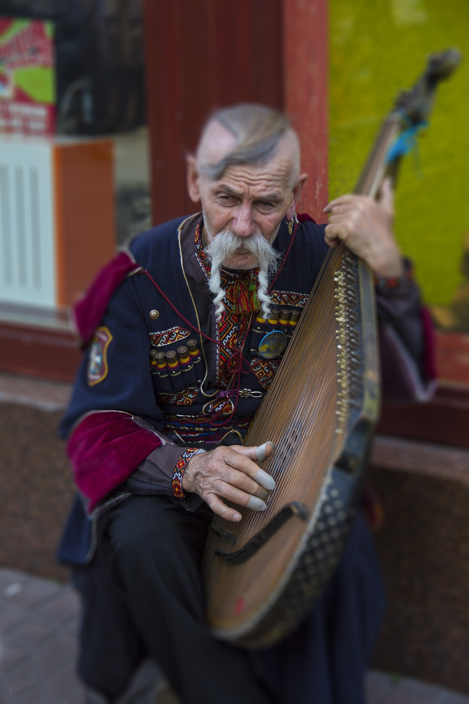

Наро́дна му́зика (музичний фольклор, англ. traditional folk music) — вокальна, інструментальна, вокально-інструментальна і
музично-танцювальна творчість народу, основний вид і підсумок художньої творчості багатьох поколінь, який ґрунтується
на історичних традиціях розвитку творчості різних груп та шарів населення. Народна музика створюється і передається в
усній формі від виконавця до виконавця, від покоління до покоління, утворюючи так званий традиційний фольклор
